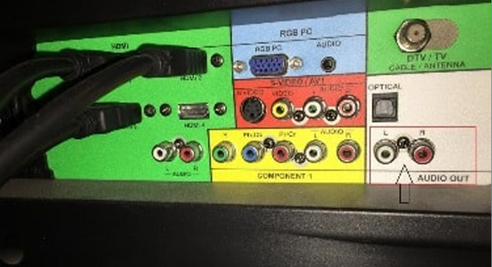

3.5mm & RCA CONNECT
Connect the 3.5mm audio Cable or Red/White RCA Cable to conn ect the Bluetooth transmitter in the TV:
Place Bluetooth Transmitter in pairing mode--> Pair the transmitte r with your Bluetooth headphones/Speaker --> Connect the trans mitter into the Audio output of TV with the 3.5mm or RCA Cable. N ote: Please make sure the TV connector is audio output, not audio input! If there is a cable box, please connect the transmitter to it.
How to use the 3.5mm Cable/RCA Cable to connect the TT-BA09 into your TV:
Switch to the "AUX" before power the TT-BA09 --> Pair the TT-BA 09 with your Bluetooth headphones/Speaker --> Connect the TV with the TT-BA09 with the Cable, plug into the "3.5mm Audio jack of the TT-BA09 --> Plug into the TV "3.5mm Audio Output/RCA O utput".
